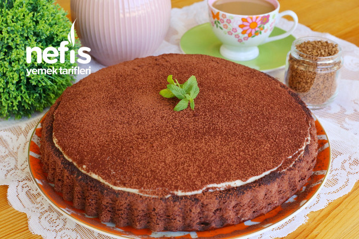

Tiramusu Tarifi

Tiramusu Nasıl Yapılır?
İlk olarak kekimizi hazırlayalım. Karıştırma kabına yumurta ve şekeri alarak 5 dakika beyazlaşıp köpük köpük olana kadar çırpalım.
Diğer malzemeleri sırasıyla ekleyelim. Süt, sıvı yağı ilave ederek 1-2 dakika daha çırpalım.
Ardından elediğimiz kakao, un, kabartma tozu ve vanilyayı da ekleyerek çırpmaya devam edelim.
Malzemelerimiz güzelce karıştıktan sonra yağlanmış unlanmış turta kalıbına harcımızı dökelim.
Kekimizi önceden ısıttığımız 170 derecede 30 dakika kadar pişirelim. Piştikten sonra soğumaya bırakalım.
Muhallebi için labne hariç bütün malzemeleri uygun bir tencereye alarak karıştıralım.
Tencereyi ocağa alalım, muhallebi kaynayıp koyulaşana kadar pişirelim. Bu aşamada sürekli karıştıralım.
Muhallebimiz kaynayınca altını kapatalım ılımaya bırakalım. Ilıyan muhallebiye labne peyniri ekleyip çırpalım.
Soğumaya kekimizi uygun bir servis tabağına alalım ve ılık suda karıştırarak erittiğimiz kahveli suyla ıslatalım.
Üzerine muhallebiyi dökelim, spatula ile güzelce düzeltelim.
Muhallebimiz iyice soğuduktan sonra kakao eleyerek süsleyelim. Tiramisu Tart tarifimizi 1 gece buzdolabında dinlendirdikten sonra servis edelim. Afiyet olsun.